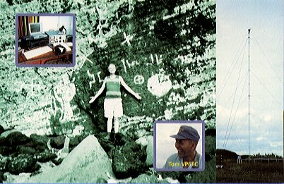

話題の局・QSL
VP6BR Pitcairn Island.


VP6BR・Jukka
2000年1/24-4/23までPitcairn Island(ex VR6)からVP6BRを運用したOH2BR
6m-160mのSSB/CW/RTTYで56,056 QSO。6mはIC-706mk2+5elを使用。

VP6BR・Jukka
2000年1/24-4/23までPitcairn Island(ex VR6)からVP6BRを運用したOH2BR
6m-160mのSSB/CW/RTTYで56,056 QSO。6mはIC-706mk2+5elを使用。